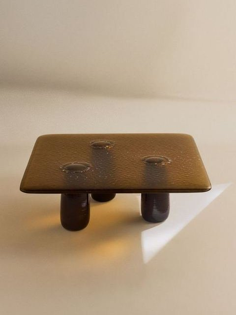
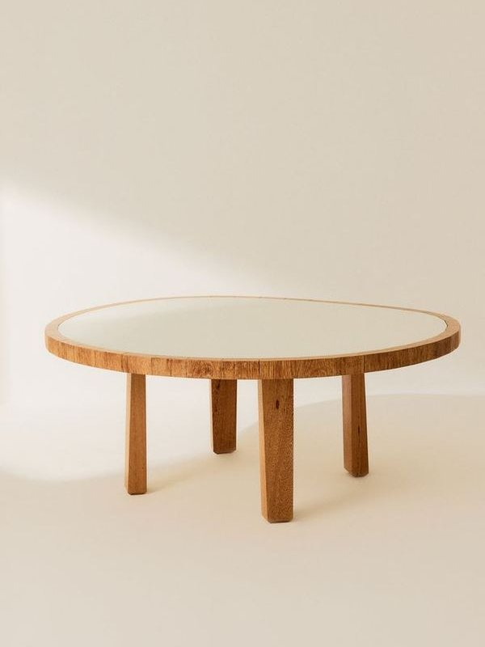
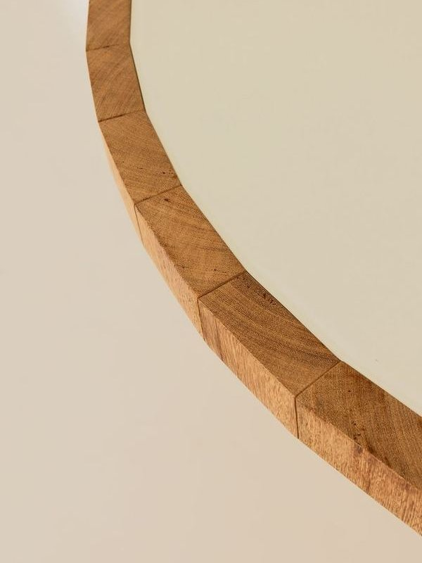

Mesa de centro Cildo


Estrutura de madeira maciça, com tampo em vidro laqueado.
“Uma grande amiga da cadeira Maria.” Post da More
[Pedir orçamento no WhatsApp][Pedir arquivos 2D e 3D no WhatsApp]
A More apresenta a Leila como "uma grande amiga da cadeira Maria".
Instagram da More, 04.09.2026Sistema componível e estrutura de madeira maciça.